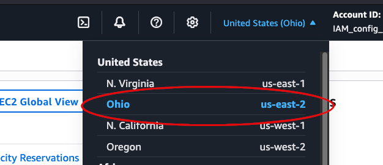
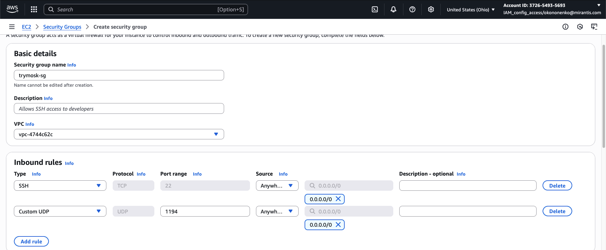
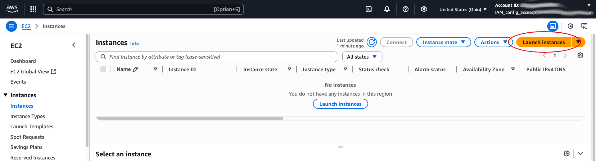
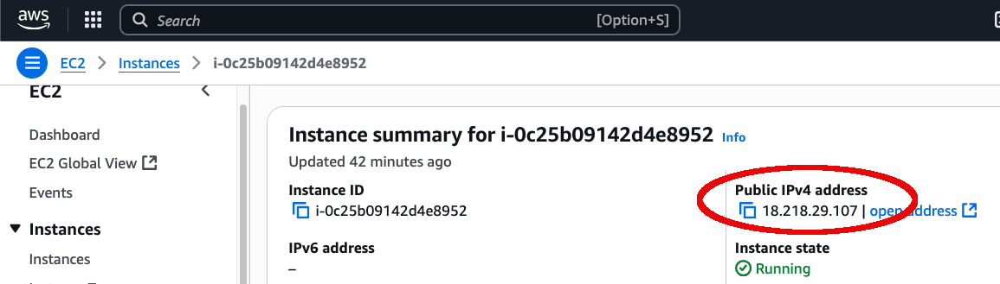

Installation on AWS
You can get a TryMOSK image from the Mirantis CDN server
The latest image releases are located in folders with pefix mosk- in the name. You can also use a prepared
AMI image on Amazon servers. This article describes the steps required to deploy TryMOSK from a prepared AMI
image. At present time they are available on the us-east-2 region.
Creating a TryMOSK Instance Using the Amazon EC2 Console#
Step 1: Open the Amazon EC2 Console
- Sign in to the AWS Management Console.
- Open the Amazon EC2 console at: https://console.aws.amazon.com/ec2/.
Step 2: Select the AWS Region
- In the navigation bar at the top-right, locate the Region selector.
- Select US East (Ohio). 
Step 3: Create a Security Group
- In the left navigation pane, under Network & Security, choose Security Groups.
- Click Create security group.
- In the Basic details section, provide:
- Security group name: A descriptive name (for example:
trymosk-sg). - Description: Purpose of the security group.
- In the Inbound rules section:
- Click Add rule.
- For Type, choose SSH.
- If you plan to use OpenVPN, click Add rule again, choose Custom UDP Rule, set Port range to
1194, and Protocol to UDP. - Click Create security group. 
Step 4: Launch the TryMOSK instance
- In the left navigation pane, choose Instances, then click Launch instances.
- Under Name and tags, set the Name (for example:
My TryMOSK). - Under Application and OS Images (Amazon Machine Image):
- Type
trymoskin the search box. - Select the required image from the results.
- Under Instance type, choose t2.xlarge (or t2.2xlarge for better performance).
- Under Key pair (login):
- Select an existing key pair, or
- Click Create new key pair to create one.
- Under Network settings, choose Select existing security group and select the one created in Step 3.
- Under Configure storage, set Root volume size to 40 GB or more.
- Click Launch instance. 
Step 5: Get the instance’s Public IP address
- Wait until the Instance state changes to Running.
- Select your instance and note the Public IPv4 address in the details panel. 
Step 6: Connect to the instance via SSH
- Linux/macOS:
ssh -i /path/to/private-key.pem ubuntu@<PublicIPv4Address>
- Windows (PuTTY):
- Convert your
.pemkey to.ppkusing PuTTYgen. - Open PuTTY, enter the public IPv4 address, and load your
.ppkkey in Connection → SSH → Auth.
Creating a TryMOSK Instance Using the AWS CLI#
This procedure describes how to launch a TryMOSK EC2 instance using the AWS Command Line Interface (AWS CLI).
Step 1: Install the AWS CLI
Follow the installation instructions in the AWS CLI User Guide: https://docs.aws.amazon.com/cli/latest/userguide/getting-started-install.html
Step 2: Configure the AWS CLI
- Follow the quick start configuration guide: https://docs.aws.amazon.com/cli/latest/userguide/getting-started-quickstart.html
- Important: Set the default AWS region to us-east-2 to ensure all operations are performed in the correct region:
aws configure set region us-east-2
Step 3: Create or import a Key Pair
You will use this key pair to connect to your EC2 instance via SSH.
Option A – Create a new key pair
aws ec2 create-key-pair --key-type rsa --key-name <your-key-name> \
--query 'KeyMaterial' --output text > <private-key-file>.pem
Where:
<your-key-name>– unique key pair name (up to 255 ASCII characters).<private-key-file>– file name for the private RSA key (keep it in a safe place).
Example:
aws ec2 create-key-pair --key-type rsa --key-name my-key-for-trymosk \
--query 'KeyMaterial' --output text > my_private_key.pem
Option B – Import an existing public key
aws ec2 import-key-pair --key-name <your-key-name> \
--public-key-material fileb://<public-key-file>
Where:
<public-key-file>– path to the.pubpublic key file.
Example:
aws ec2 import-key-pair --key-name another-key-for-trymosk \
--public-key-material fileb://home/ubuntu/test_rsa.pub --output text
Example response:
b8:d6:be:72:9c:60:d8:b8:59:d9:00:ab:bd:9d:8c:f8 another-key-for-trymosk key-00d4cf79ad02dd1c5
Step 4: Create a Security Group
4.1. Find your default VPC ID
aws ec2 describe-vpcs --query='Vpcs[?IsDefault].VpcId' --output text
vpc-4744c62c
4.2. Create the security group
aws ec2 create-security-group --group-name <your sg name> \
--description "<your sg description>" --vpc-id <VPC Id> \
--query='GroupId' --output text
<sg-name>– security group name (unique within VPC, up to 255 characters, cannot start withsg-).<sg-description>– description of the security group.<VPC-ID>– ID from step 4.1
Example:
aws ec2 create-security-group --group-name trymosk-security-group \
--description "Test security group for TryMOSK" --vpc-id vpc-4744c62c \
--query='GroupId' --output text
sg-0d72aa991587b5648
4.3. Add inbound rules Allow SSH (port 22) and OpenVPN (port 1194 UDP):
aws ec2 authorize-security-group-ingress --group-id <sg-id> --protocol tcp --port 22 --cidr 0.0.0.0/0
aws ec2 authorize-security-group-ingress --group-id <sg-id> --protocol udp --port 1194 --cidr 0.0.0.0/0
<sg-id> is from step 4.2.
Step 5: Find the TryMOSK AMI ID
aws ec2 describe-images --filters Name=name,Values="trymosk*" \
--query='Images[*].[ImageId,Name,CreationDate]' --output table
Example response:
--------------------------------------------------------------------------------------------------
| DescribeImages |
+-----------------------+-------------------------------------------+----------------------------+
| ami-0504712c3ecb27331| trymosk-jammy-amd64-25.1-20250723112122 | 2025-07-29T09:52:53.000Z |
+-----------------------+-------------------------------------------+----------------------------+
Step 6: Launch the TryMOSK instance
aws ec2 run-instances --image-id <AMI Id> --count 1 \
--instance-type t2.xlarge \
--key-name <rsa key pair name> \
--security-group-ids <sg id> \
--associate-public-ip-address \
--block-device-mapping DeviceName=/dev/sda1,Ebs={VolumeSize=<root volume size>} \
--query='Instances[0].InstanceId' --output text
Where:
<AMI-ID>– AMI ID from step 5.<rsa-key-name>– key pair from step 3.<sg-id>– security group from step 4.<root-size>– root volume size (minimum 40 GB).
Example:
aws ec2 run-instances --image-id ami-0504712c3ecb27331 --count 1 \
--instance-type t2.xlarge \
--key-name another-key-for-trymosk \
--security-group-ids sg-0d72aa991587b5648 \
--associate-public-ip-address \
--block-device-mapping DeviceName=/dev/sda1,Ebs={VolumeSize=40} \
--query='Instances[0].InstanceId' --output text
Example of response:
i-0c8a0969dfd64c909
Step 7: Wait for the instance to start
aws ec2 describe-instances --instance-ids <your instance Id> \
--query='Reservations[0].Instances[0].State.Name' --output text
Where <your instance Id> is from step 6.
Example:
aws ec2 describe-instances --instance-ids i-0c8a0969dfd64c909 \
--query='Reservations[0].Instances[0].State.Name' --output text
Example of response:
pending
Step 8: Get the public IPv4 address
aws ec2 describe-instances --instance-ids <your instance Id> \
--query='Reservations[0].Instances[0].PublicIpAddress' --output text
Where <your instance Id> is from step 6.
Example:
aws ec2 describe-instances --instance-ids i-0c8a0969dfd64c909 \
--query='Reservations[0].Instances[0].PublicIpAddress' --output text
Example of response:
18.218.29.107
Step 9: Connect via SSH
From your local computer:
- Linux/macOS:
ssh -i /path/to/private-key.pem ubuntu@<PublicIPv4Address>
- Windows (PuTTY):
- Convert your
.pemkey to.ppkusing PuTTYgen. - Open PuTTY, enter the public IPv4 address, and load your
.ppkkey in Connection → SSH → Auth.
- Convert your
Setting up TryMOSK on an AWS instance#
This section explains how to set up TryMOSK on the EC2 instance created in the previous steps.
Step 1: Start the TryMOSK installation
The installation process takes approximately 25 minutes. It will:
- Install and configure Kubernetes and Rockoon on the instance.
- Set up the OpenVPN server.
- Create the OpenVPN client configuration file.
Run the following command to start the setup:
sudo screen -d -m /srv/trymosk/launch.sh
This runs the installation script inside a screen session, allowing it to continue even if your SSH connection is interrupted.
Step 2: Monitor the installation
You can view the installation log in real time:
sudo tail -f /var/log/trymosk-install.log
Step 3: Access TryMOSK after installation
When installation is complete, you can:
- Work with MOS directly via the console, or
- Retrieve the OpenVPN client configuration file and set up a VPN connection from your local computer.
Once connected via VPN, you can use:
- Horizon (OpenStack web interface)
- Mirantis Lens
- Local
kubectlcommands to manage TryMOSK services.
Step 4: View system information and credentials
After installation, system details, OpenStack version, and admin credentials will be displayed as a Message of the Day (MOTD) upon SSH login.
Example output:
OS_FAMILY: Debian
OS_DISTRO: Ubuntu
OS_DISTRO_VERSION: 22.04
OPENSTACK_VERSION: caracal
ROCKOON_VERSION: 1.0.11
ADMIN_USERNAME: adminlpsdb63Gvn1
ADMIN_PASSWORD: tLuQfuJVAxxxxxxxxxxxxx